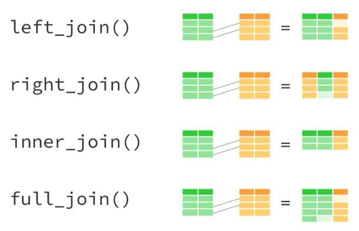

flights %>%
mutate(
lateness = case_when(
arr_delay > 30 ~ "very late",
arr_delay > 0 ~ "late",
TRUE ~ "on time"
)
)3 Data Munging (II)
3.1 Review
%>%: The pipe operatordplyrverbs for data manipulationselect()filter()rename()arrange()mutate()summarize()group_by()
3.2 Motivation
- Review and master
library(dplyr) - Expand our skill set so we can do more types of analysis
3.2.1 Exercise 0
Step 1: Open up your .Rproj for urbn101. You should now see urbn101 in the top right of RStudio instead of “Project: (None)” .
Step 2: Install the R package nycflights13.
Step 3: Load tidyverse and nycflights13 at the top of your script.
Step 4: Run data(flights) in the console to load the flights data set into your R environment. Also run data(planes) to load the planes data set.
Step 5: Look at the flights data set (how many ways can you do this?)
3.3 Conditional transformation
Last week, we showed how mutate() can be used to create new variables or to transform new variables. For example, we converted knots into miles per hour. We also learned about if_else last week which works great for one condition. But what if you have multiple conditions? case_when() allows for a sequence of conditional logic that can be used to transform or create variables with mutate(). For example, here I create a variable called lateness that creates a character variable with the levels "very late", "late", and "on time". The logic is evaluated from top to bottom and TRUE is used to refer to all other remaining cases.
The syntax may look a little weird at first but it’s easy to pick up! The logical condition goes to the left of ~ and the output results goes to the right. & and | can be used to combine logical statements.
3.4 Strings
library(stringr) contains powerful and concise functions manipulating character variables. Reference the cheat sheet for an overview of the different string maniuplation functions.
3.4.1 Exercise 1
The month and day columns are currently integer variables. We want to turn them into character variables with leading zeros. For example, 1 should be "01".
Step 1: Use mutate() to overwrite month and day with str_pad(). The first argument should be month or day. The second argument, width, should be 2.
Step 2: The padding character is currently a space, but we want it to be "0". Use ?str_pad to figure out how to switch the padding character.
Step 3: Pipe the result into the following line mutate(flight_date = paste(year, month, day, sep = "-"))
Step 4: Drop all variables except flight_date, distance, and air_time.
Step 5: Assign the result to flights_subset.
3.5 Dates
library(lubridate) contains powerful and concise functions for creating and manipulating dates, times, and date-times. It is aware of leap days and leap seconds and is useful for calculating periods, durations, intervals, and more.
3.5.1 Exercise 2
Step 1: Add library(lubridate) after library(nycflight13) in your script.
Step 2: library(lubridate) is powerful but it needs variables in the correct format. Use ymd() inside of mutate() to turn the flight_date variable into a date rather than a character vector.
Step 3: Inside the previous mutate statement, add another column called weekday for the weekday of the flight. You can use wday(flight_date) to find the day of the week for each date.
Step 4: Assign the result to flights_subset.
Step 5: Use count() to count the number of flights by day of the week.
3.6 group_by and summarize()
This is often the hardest concept to fully grasp, but it’s also the most powerful! 
3.6.1 Exercise 3
We are going to summarize flights_subset from the previous example by week_day
Step 1: group_by() week_day and use n() in summarize() to count the number of observations. This should match Step 5 from the previous exercise.
Step 2: In the same summarize(), calculate mean(), and max() distance.
Step 3: In the same summarize(), calculate median air_time.
Step 4: Rename the resulting variables inside summarize() so they have more useful names.
3.7 left_join()
Joins are the main method for combining two datasets with a commmon key column together. There are many types of joins, and we highly recommend you read this chapter on joins in R4DS if you want more info. Below is a quick visual summary of the types of joins you can perform in R. 
For now we will focus on the “left” join, which merges observations from the right data set to the left data set. This is the join type I use 90% of the time in R. Below is an example of how the left_join() function works.
people <- tribble(
~name, ~team,
"Aaron", "Pacers",
"Kyle", "Wizards",
"Ajjit", "Warriors",
"Fay", "Wizards"
)
team_locations <- tribble(
~team, ~city,
"Warriors", "Oakland",
"Pacers", "Indianoplis",
"Wizards", "Washington DC"
)
left_join(x = people, y = team_locations, by = "team")# A tibble: 4 × 3
name team city
<chr> <chr> <chr>
1 Aaron Pacers Indianoplis
2 Kyle Wizards Washington DC
3 Ajjit Warriors Oakland
4 Fay Wizards Washington DC3.7.1 Exercise 4
flights contains information about flights and the unit of observation is airplane flights. planes contains information about the airplanes and the unit of observation is the airplane. The common column between these tables is the tailnum column.
We want to add information about planes to the flights data set. This is a left join because for every flight in the dataset, we want to append flight information. This is also called a many-to-one join because we are joining many rows from the flights data to one row from the planes data.
Step 1: Use left_join() to join planes to flights. The common key is tailnum.
Step 2: Use anti_join() to see observations from flights that don’t have a match in planes and call the output object unmatched_flights. The common key is tailnum.
Step 2: Use slice() to extract the tailnum value in the first row of unmatched_flights. Call this variable first_unmatched_tailnum
Step 3: Use filter() to see if first_unmatched_tailnum is in planes. Hint: it shouldn’t be!
3.8 Custom functions
Sometimes functions don’t exist for desired calculations or we want to combine many calculations into one function to reduce copying-and-pasting.
“You should consider writing a function whenever you’ve copied and pasted a block of code more than twice (i.e. you now have three copies of the same code).” ~ R4DS
R has a flexible function system that makes it very easy to define custom functions!
function_name <- function(arg1, arg2 = default) {
# function body
}Three ingredients
- Function name - usually verbs
- Function arguments - inputs to the function (optional)
- Function body
square <- function(x = 2) {
x ^ 2
}
square()[1] 4square(x = 4)[1] 16Note: Using tidyverse functions inside of custom functions often requires non-standard evaluation. Please reach out for help when this is your goal.
3.8.1 Exercise 5
Step 1: Write a function called multiply_xy() that takes arguments x and y and multiplies them together.
Step 2: Add your favorite number as the default for x and your least favorite number as the default for y.
Step 3: Call the function and overwrite the default for y with your favorite number.
3.9 System functions
R contains a full set of functions for managing files and folders on your computer
file.create()file.exists()file.remove()file.rename()file.copy()dir.create()
What do you think this below chunk of code is doing in plain English?
if (!file.exists("data/cps.csv")) {
download.file("https//:cps-download.gov", "data/cps.csv")
}3.9.1 Exercise 6
Step 1: Check to see if you are in an R project. Use dir.create() to create a folder called final-data/.
Step 1: Use file.copy() to duplicate your script and then delete the copy with file.remove(). CAREFUL! There is no undo button!
3.10 Conditional logic
Conditional logic is an important concept in computer programming. We already used ifelse() and case_when() to create indicator variables and conditional variables. Sometimes it’s also useful to run entire chunks of code conditionally.
if () {
} else if () {
} else {
}Three ingredients
- Conditional predicate (
if,else if,else) - Conditional statement (
==,>,<,%in%) - Code body
3.10.1 Example
x <- 1000
if (x > 999) {
print("x is big")
} else {
print("x is small")
}[1] "x is big"3.11 Resources
- R4DS: functions
stringrcheat sheet